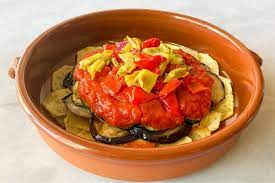

Tumbet

Description: A Mallorcan dish resembling ratatouie but far tastier. A joy to eat, easy to make, and good for your bowels!
I ate this nearly every day my first week in Mallorca.
Ingredients
- Two large red peppers
- One large yellow pepper
- Four to Five small garden tomatos
- Two small garden eggplants
- One large potato
- Two eggs
- A few tablespoons of olive oil
- 40g sea salt, flaky
Steps
- medium-thinly slice the potatos
- julienne the peppers
- quarter the tomatos
- slice the eggplants
- Oil a small earthware deep dish and layer potatos on bottom
- Add a splash of oil and place eggplants
- Add a splash of oil and layer julienned peppers and tomatos
- Put earthware in oven for 8 minutes at 500 degrees farenheit and remove, set aside away from heat
- In a separate pan fry eggs sunny side up
- Lay eggs on top of vegetables in earthware dish, sprinkle flake salt and enjoy